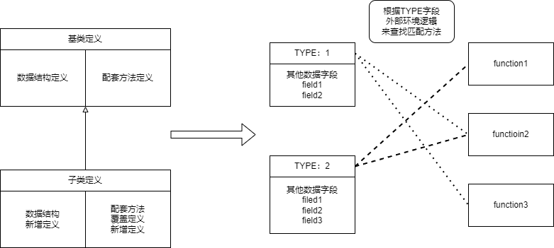

游戏架构理论
02状态与函数
本文，主要总结我在写游戏代码过程中对于状态与函数的理解和使用。
在写游戏架构的过程中，我们经常会根据需求来封装对象结构和功能接口。经常会将某些概念，例如技能，BUFF，根据面向对象思路，封装成一些类。然后将这些类实例化出来后进行使用。而在这实例化类这个过程中，实际就就是创建了一个状态集合，随后发生的操作都是针对该状态集合的修改。
本文主要解释状态这种抽象概念，并且阐释状态，与，函数之间的联系。
状态与函数
在程序底层运行过程中，所有东西都是由01构成的数据组成。即便是程序的运行逻辑，实际也是由对01数值组成的数据进行解释，驱动的寄存器操作数据来完成的。也就是说，从底层来看，数据状态和函数本质没有什么区别，都是01组成的数据罢了。
但是在程序语言中都不可避免的会提及变量数据和函数两种对象，并且可以感知到两种对象略有不同。对于一个变量数据，其可以随着程序的运行而不断改变。而函数定义好过程后，其基本无法修改。其次函数可以被调用，用来修改内存上的数据，而变量数据只是一种数据的记录。所以可以看到两者有着诸多的区别。
实际上从图灵机的定义出发，也可以发现状态和函数有着不一样的定位。
一台图灵机是一个七元组$\{Q,\Sigma,\Gamma,\delta,q_0,q_{accept},q_{reject}\}$），由七个集合构成：
- $Q$：状态集合。标记读写头所处状态。
- $\Sigma$：输入字母表，不包含特殊空白符。图灵机输入条初始状态。
- $\Gamma$：带字母表。表示所有可能出现的字母的集合。
- $\delta$：转移函数。为一个映射$Q\times{}\Gamma\rightarrow{}Q\times\Gamma\times\{L,R\}$。表示当读写头处于某个状态$q$，条带处于某个字母$x$时。讲读写头状态变为下一个状态$q'$，并且修改条带字母为$x'$后，进行左移或者右移。
- $q_0,q_{accept},q_{reject}$：初始状态，最终的接受状态，最终的拒绝状态。
可以看到对于状态和转移函数有着明确的划分。
而从程序结构层面，我们也可以感觉到两者明显的不同。
所以可以粗略定义状态和函数如下：
定义：
状态：
状态是一块数据，该数据区域会随着程序运行时间变化而发生改变。
函数：
函数是一个映射，对于给定的输入环境，其总是能映射到确定的输出环境上面。
状态：
状态一般就对应于内存上一块数据区域。
假如一块数据区域，不随着时间发生改变。那我们便可以在一开始确定该数据区域内容，那么该数据区域就会是一个常数区域。对于常数区域，其所在位置是确定化的，在代码层面就可以明确指定访问。但对于状态来说，在不同的时间看该数据区域，其会有不同的数值。而且当遇到容器结构，指针结构的时候，其前后指向的数据区域会随着时间变化，进而无法直接获取到目标数据区块。
另一方面，对于任何数据区域都可以当作一个输入环境传递给调用函数，函数按顺序处理，对于数据区域内数据进行修改。那么整个相同的输入环境值，将会产生出一个相同的输出环境值。但是数据区域内的状态则被改变了。当后面来看该区域，该区域内的数据将一直是函数输出后环境值。
函数：
函数一般就对应于每个语言必有的函数结构。 在程序语言中，其是由一系列操作指令构成，但是无一例外可以当作是一个函数映射结构。对于给定的一个输入环境值，其经过一些列操作值后，产生另一个输出环境。可以表示为$F:S_0\rightarrow{}S_1,S_0,S_1\in{}S$。$S$是整个环境所有状态的集合。
注意这里的定义与函数式编程中的纯函数是不一样的。对比纯函数的定义，这里定义的函数要稍微弱一些。对于一个纯函数来说，定义如下：
- 对于完全相同的输入参数，纯函数返回值一定是完全相同的。
- 纯函数执行过程中，没有产生任何副作用。
而所谓副作用包含了例如，print输出，内存查找修改等修改无关输入参数的状态。而这里函数定义中的给定输入环境，则指代函数开始运行时关心的整个运行状态，例如一个指针，也包含了指针指向的数据结构区域状态。对于print，函数并不关心其对于屏幕的输出结构，所以可以不算产生副作用。
对象定义
在游戏开发过程中，我们一般会根据策划需求中的概念来建模一些对象模型。将这些对象以面向对象设计的方式封装成一个个类。而在封装类的时候，我们会定义其数据结构以及配套的方法。当实例化一个类时，其会产生一个实例对象结构，可以在该实例对象结构上调用配套的方法来完成目标功能。其结构大致如下图：
根据对象模型，整个运行流程如下：
- 当类实例化时会在内存上分配一个区域，按照数据字段格式分配好数据区域结构，并赋值对应数据区域内的初始值。
- 当调用实例对象的方法时，实例对象会索引自己所属的类定义结构。从中查找配套方法，并调用该方法。
而当调用方法时，其实可以认为是调用了一个函数，并且将当前实例对象做为潜在参数传递给该函数。使得函数可以获取该实例对象数据。进而实现似乎
所以类定义可以认为承担了如下作用：
- 定义了实例的数据结构和默认初始化数值。
- 定义了配套的处理函数，并承担类型查找分派的功能。
- 当调用方法时，查找到目标函数，并且将实例对象作为潜在参数传递。
可以看到，此时对于实例对象实际只是不同的状态数据，而方法部分实际都是统一的函数。而函数在编译器编译后就已经确定，并且放在固定区域。
于此基础上，可以看到两类主导的分派：
- 以对象为主导的分派：获取该对象状态数据后，找到配套使用的方法，并调用方法对应的函数，传入自身对象来执行功能。
- 以功能为主导的分派：获取该功能函数后，调用者根据环境，依次传入状态参数来执行功能。
至于该使用哪类分派则完全由当时的环境来决定。 以对象为主导的分派以对象为主体，一般该对象实体的功能会跟随着对象实体发生改变，并伴随其生命周期。 而以功能为主导的分派，功能描述为主体不动点，调用者知道其功能含义，并且知道参数类型和效果值。调用者会根据需要来调用之。
数据驱动函数
上面我们看到对于对象模型来说，其本质就是建立了实例数据结构和调用函数之间的映射关系。在拥有该实例数据后，我们可以找到配套方法的函数来处理数据。 而这可以通过在实例数据中通过添加统一字段标识来实现动态查找功能的作用，如下图：
可以这么认为，对于统一字段部分，是约定好的一个数据结构协议。根据协议中约定好的字段，来查找对应的函数来进行匹配操作。而匹配过程实际上就是一个对约定好数据结构字段进行解析分派的结构，该过程可以这样去处理：
- 单纯根据一个字段值来查找，该字段值就是类型标识。
- 根据多个字段值，混合决定查找函数。
- 分派存在当前环境，根据当前环境和
可以发现这个类型系统相比于对象模型有着更强的解耦特性。这个协议部分也可以称之为类型系统，在04类型系统中会再去分析类型系统中的各种概念和想法。 而这样一个方式其也引出了另一方面。由数据来动态驱动函数调用。
-
代码静态函数绑定形成静态的函数调用流程： 所谓代码静态函数绑定是指：
- 函数过程中指定调用固定的某个函数。
- 固定数据结构调用固定的某个函数。
可以看到不存在根据字段动态分配函数的过程，那么整个计算流程将会是固定化的操作。逻辑运行的流程就是代码显然书写出来的调用流程。
-
数据动态驱动函数调用流程： 存在一个字段值，可以动态决定当前数据结构的处理函数。可在其余数据不改变情况下，单纯修改字段值就可以修改数据结构所使用的处理函数流程。
而使用数据驱动函数，进而目标对象的实际处理流程并不确定，取决于其当前字段值。这种结构也会反映在一些容器化的处理结构中，当容器中某个对象存在的时候就说明存在这类函数处理，如果不存在就不处理。对象存在就承担了对数据状态动态的函数调用流程。而目标对象的处理结构，就要取决于当时实际的数据状况。而这也是游戏结构动态性的体现。
函数运行环境
一个函数运行时可以获取到的数据称之为函数运行环境。对函数来说，其环境一般就两类：
- 非局域环境：全局环境，以及上下文闭包环境。
- 参数环境：传入函数的参数。
总结
这同时也启发我们对于结构封装的特点：
- 如果需求概念涉及复数，则其必定存在不同状态，需要封装成对象。
- 如果需求概念涉及时间，则其必定有前后状态，需要封装成对象。